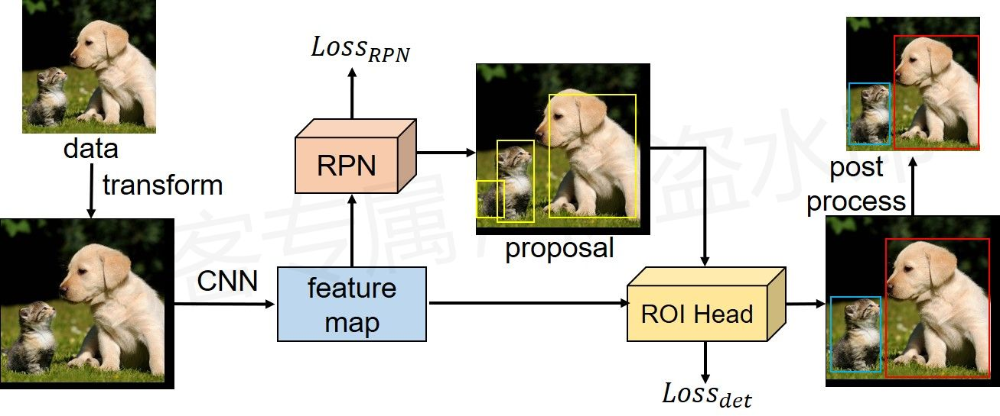

目标检测：Faster R-CNN网络结构¶
综述¶
会议时间：Conference and Workshop on Neural Information Processing Systems 2015 (NIPS, 2015)
论文地址：https://proceedings.neurips.cc/paper/2015/file/14bfa6bb14875e45bba028a21ed38046-Paper.pdf
类型：二阶段目标检测（two-stage）
简介¶
网络框架：

流程图原创，使用请告知
代码¶
注：模型代码来源于PyTorch官方实现的Faster R-CNN，可由如下函数指令直接调取：
torchvision.models.detection.FasterRCNN()
参考链接：
- https://www.bilibili.com/video/BV1of4y1m7nj
- https://github.com/WZMIAOMIAO/deep-learning-for-image-processing
整体框架¶
# 这里主要定义了网络的前向传播过程，rpn、roi等模块由另一个对象创建
class FasterRCNNBase(nn.Module):
"""
Main class for Generalized R-CNN.
Arguments:
backbone (nn.Module):
rpn (nn.Module):
roi_heads (nn.Module): takes the features + the proposals from the RPN and computes
detections / masks from it.
transform (nn.Module): performs the data transformation from the inputs to feed into
the model
"""
def __init__(self, backbone, rpn, roi_heads, transform):
super(FasterRCNNBase, self).__init__()
# 图片预处理方法
self.transform = transform
# 基层的特征提取网络
self.backbone = backbone
# rpn模块
self.rpn = rpn
# roi head模块
self.roi_heads = roi_heads
# used only on torchscript mode
self._has_warned = False
@torch.jit.unused
def eager_outputs(self, losses, detections):
# type: (Dict[str, Tensor], List[Dict[str, Tensor]]) -> Union[Dict[str, Tensor], List[Dict[str, Tensor]]]
# 如果是训练阶段，则只返回损失
if self.training:
return losses
# 否则只返回检测结果
return detections
# 前向传播
def forward(self, images, targets=None): # 传入：图片列表、target列表(里面是字典)
# type: (List[Tensor], Optional[List[Dict[str, Tensor]]]) -> Tuple[Dict[str, Tensor], List[Dict[str, Tensor]]]
"""
Arguments:
images (list[Tensor]): images to be processed
targets (list[Dict[Tensor]]): ground-truth boxes present in the image (optional)
Returns:
result (list[BoxList] or dict[Tensor]): the output from the model.
During training, it returns a dict[Tensor] which contains the losses.
During testing, it returns list[BoxList] contains additional fields
like `scores`, `labels` and `mask` (for Mask R-CNN models).
"""
# 如果模型处于训练阶段，则必须传入标签targets
if self.training and targets is None:
raise ValueError("In training mode, targets should be passed")
if self.training:
assert targets is not None
# 进一步判断传入的target的boxes参数是否符合规定
for target in targets:
# 获取边界框参数，左上角和右下角两个点坐标
boxes = target["boxes"]
# 判断边界框是不是torch.Tensor
if isinstance(boxes, torch.Tensor):
# 判断边界框符不符合规则
if len(boxes.shape) != 2 or boxes.shape[-1] != 4:
raise ValueError("Expected target boxes to be a tensor"
"of shape [N, 4], got {:}.".format(
boxes.shape))
else:
raise ValueError("Expected target boxes to be of type "
"Tensor, got {:}.".format(type(boxes)))
original_image_sizes = torch.jit.annotate(List[Tuple[int, int]], [])
# 按传入的每一张图片遍历
for img in images:
# 后两个维度应该是高和宽，即图像的尺寸
val = img.shape[-2:]
# 图像必须是二维的，防止输入一个一维的向量
assert len(val) == 2
# 将高和宽添加到变量中，下一步会进行预处理(图片按比例缩放到一定的范围中)，之后将输出映射回原图像中，就需要这个变量了
original_image_sizes.append((val[0], val[1]))
# original_image_sizes = [img.shape[-2:] for img in images]
# 预处理之后就变成了一个batch了
images, targets = self.transform(images, targets) # 对图像进行预处理
# 如果是fpn的话，会输出一组特征图，键分别为'0','1','2','3','pool'(默认情况下)，值依次为卷积网络每个阶段输出的特征图
# 如果不利于fpn的话，则只输出一组特征图
features = self.backbone(images.tensors) # 将图像输入backbone得到特征图
# 若只在一层特征层上预测，将feature放入有序字典中，并编号为‘0’。若利用FPN，则在多层上预测，输出本身就为字典格式
if isinstance(features, torch.Tensor):
# 最终就是要将输出的特征图转化为字典格式，便于后续调用
features = OrderedDict([('0', features)])
# 将特征层的特征图以及标注target信息传入rpn中
# proposals: List[Tensor], Tensor_shape: [num_proposals, 4]
# 每个proposals是绝对坐标，且为(x1, y1, x2, y2)格式，数量为预先设定好的(2000个),proposal_losses为RPN阶段的损失
# 绝对坐标:对应于原图(预处理后的图像)的坐标，即与targets中的坐标相对应
proposals, proposal_losses = self.rpn(images, features, targets)
# 将rpn生成的数据以及标注target信息传入fast rcnn后半部分
# detections为检测到的目标，detector_losses为Faster R-CNN后半部分的损失
detections, detector_losses = self.roi_heads(features, proposals, images.image_sizes, targets)
# 对网络的预测结果进行后处理，主要将bboxes还原到原图像尺度上，即预处理之前的尺度
detections = self.transform.postprocess(detections, images.image_sizes, original_image_sizes)
# 记录损失
losses = {}
losses.update(detector_losses)
losses.update(proposal_losses)
if torch.jit.is_scripting():
if not self._has_warned:
warnings.warn("RCNN always returns a (Losses, Detections) tuple in scripting")
self._has_warned = True
return losses, detections
else:
# 返回self.eager_outputs的方法
# 其实就两点:如果是训练阶段，就返回损失;如果是测试阶段，返回检测结果
return self.eager_outputs(losses, detections)
模型参数初始化¶
参数意义：
backbone：主干特征提取网络num_classes：数据集类别数量min_size、max_size：图片预处理时限制的最小尺寸和最大尺寸image_mean、image_std：图片标准化时使用的均值和方差rpn_anchor_generator：锚点生成器，用于生成锚点图rpn_head：RPN检测头，用于检测特征图上预测目标的概率和回归参数rpn_pre_nms_top_n_train、rpn_pre_nms_top_n_test：RPN中，NMS之前，每个阶段(FPN有多个预测特征层)所最多保留的检测目标数量，一个表示训练、一个表示测试，下面同理rpn_post_nms_top_n_train、rpn_post_nms_top_n_test：RPN中，NMS后，综合所有阶段所保留的检测目标数量rpn_nms_thresh：RPN中NMS处理时使用的IOU阈值rpn_fg_iou_thresh、rpn_bg_iou_thresh：RPN过程中，划分正负样本时设置的阈值(IOU大于多少视为正样本、小于多少视为负样本)rpn_batch_size_per_image、rpn_positive_fraction：RPN计算损失时采样的样本数以及正样本所占的比例box_roi_pool：ROIPool模块，相当于利用RPN预测得到的目标框将特征图进行裁剪，再放大到指定大小box_head、box_predictor：ROI中用于预测类别概率和回归参数的模块box_score_thresh：用于移除目标概率低于此值的情况box_nms_thresh：ROI中NMS处理的IOU阈值box_detections_per_img：ROI中最终提取的目标数量(根据目标存在的概率排序，取前n个)box_fg_iou_thresh、box_bg_iou_thresh：和RPN中意义类似，判断fast rcnn中正负样本时的阈值box_batch_size_per_image、box_positive_fraction：和RPN中意义类似，计算fast rcnn误差时采用的样本数以及正样本所占比例
# 初始化各种模块
class FasterRCNN(FasterRCNNBase):
def __init__(self, backbone, num_classes=None, # num_classes检测目标的类别个数，类别加背景(N+1)
# transform parameter
# 预处理resize时限制图片的最小尺寸与最大尺寸
min_size=800, max_size=1333,
# 预处理normalize时使用的均值和方差
image_mean=None, image_std=None,
# RPN parameters
# rpn_anchor_generator用于生成锚点图，rpn_head为rpn检测头，用于检测"建议区域"
rpn_anchor_generator=None, rpn_head=None,
# FPN有多个预测特征层，每层在NMS前都保留2000个，总共加起来上万，之后通过NMS保留2000个
# 训练阶段每层默认保留2000个，测试阶段默认每层保留1000个
rpn_pre_nms_top_n_train=2000, rpn_pre_nms_top_n_test=1000,
# rpn中在nms处理后保留的proposal总数，所有阶段的proposal合并起来
rpn_post_nms_top_n_train=2000, rpn_post_nms_top_n_test=1000,
# rpn中进行nms处理时使用的iou阈值
rpn_nms_thresh=0.7,
# rpn计算损失时，采集正负样本设置的阈值
rpn_fg_iou_thresh=0.7, rpn_bg_iou_thresh=0.3,
# rpn计算损失时采样的样本数，以及正样本占总样本的比例，默认正负样本1:1
rpn_batch_size_per_image=256, rpn_positive_fraction=0.5,
rpn_score_thresh=0.0,
# Box parameters
# box_predictor用于预测类别概率和边界框回归参数
box_roi_pool=None, box_head=None, box_predictor=None,
# 移除低目标概率 fast rcnn中进行nms处理的阈值 对预测结果根据score排序取前100个目标
box_score_thresh=0.05, box_nms_thresh=0.5, box_detections_per_img=100,
# fast rcnn计算误差时，采集正负样本设置的阈值，这里针对的是fast rcnn，上面针对rpn
box_fg_iou_thresh=0.5, box_bg_iou_thresh=0.5,
# fast rcnn计算误差时采样的样本数，以及正样本占所有样本的比例，上面那个针对rpn
box_batch_size_per_image=512, box_positive_fraction=0.25,
bbox_reg_weights=None):
# 主干特征提取网络必须包含out_channels(输出特征图的通道数)这个属性，便于后续的调用
if not hasattr(backbone, "out_channels"):
raise ValueError(
"backbone should contain an attribute out_channels"
"specifying the number of output channels (assumed to be the"
"same for all the levels"
)
# 如果传入锚点生成器或者roi pool模块的话，对象必须是指定的类
assert isinstance(rpn_anchor_generator, (AnchorsGenerator, type(None)))
assert isinstance(box_roi_pool, (MultiScaleRoIAlign, type(None)))
if num_classes is not None:
if box_predictor is not None:
raise ValueError("num_classes should be None when box_predictor "
"is specified")
else:
if box_predictor is None:
raise ValueError("num_classes should not be None when box_predictor "
"is not specified")
# 经过fpn后，输出特征图的通道数，即输入RPN模块特征图的通道数
out_channels = backbone.out_channels
# 若anchor生成器为空，则自动生成针对resnet50_fpn的anchor生成器
if rpn_anchor_generator is None:
# 小size预测小目标，大size预测大目标
# 原论文只有(128,), (256,), (512,)，这里多了两个
anchor_sizes = ((32,), (64,), (128,), (256,), (512,))
# 比率元组的元素重复5遍，每个size均与ratios中的每个元素做匹配
aspect_ratios = ((0.5, 1.0, 2.0),) * len(anchor_sizes)
# 得到锚点生成器
rpn_anchor_generator = AnchorsGenerator(
anchor_sizes, aspect_ratios
)
# 生成RPN通过滑动窗口预测网络部分
if rpn_head is None:
# 创建3*3的卷积层和1*1的卷积层
rpn_head = RPNHead(
out_channels, rpn_anchor_generator.num_anchors_per_location()[0]
)
# 默认rpn_pre_nms_top_n_train = 2000, rpn_pre_nms_top_n_test = 1000,
# 默认rpn_post_nms_top_n_train = 2000, rpn_post_nms_top_n_test = 1000,
rpn_pre_nms_top_n = dict(training=rpn_pre_nms_top_n_train, testing=rpn_pre_nms_top_n_test)
rpn_post_nms_top_n = dict(training=rpn_post_nms_top_n_train, testing=rpn_post_nms_top_n_test)
# 定义整个RPN框架
rpn = RegionProposalNetwork(
# 锚点生成器，rpn检测头
rpn_anchor_generator, rpn_head,
# 传入划分前景与背景的阈值；fg前景目标，bg背景目标
rpn_fg_iou_thresh, rpn_bg_iou_thresh,
# RPN计算损失时，使用的样本数和正样本占比
rpn_batch_size_per_image, rpn_positive_fraction,
# nms处理之前，针对每个特征层保留的目标个数，nms之后所有特征层目标剩余的总数，nms处理时的阈值
rpn_pre_nms_top_n, rpn_post_nms_top_n, rpn_nms_thresh,
score_thresh=rpn_score_thresh)
# Multi-scale RoIAlign pooling 用于裁剪原特征图
if box_roi_pool is None:
box_roi_pool = MultiScaleRoIAlign(
# 对多组特征图进行裁剪，用于后续的预测，字典类型
# 在哪些特征层进行roi pooling，这里默认用到了RPN特征金字塔，因此需要对多层进行裁剪
# 如果不加RPN特征金字塔，则需要提前定义好box_roi_pool，即只使用最后一层
featmap_names=['0', '1', '2', '3'],
# roi pooling之后，得到的特征矩阵都是7*7的
output_size=[7, 7],
# sampling_ratio表示采样率
sampling_ratio=2)
# fast RCNN中roi pooling后的展平处理两个全连接层部分
if box_head is None:
# 返回特征图的尺寸，默认等于7
resolution = box_roi_pool.output_size[0]
representation_size = 1024
# 由两个全连接构成
box_head = TwoMLPHead(
out_channels * resolution ** 2, # 256*7*7,通道数、长、宽，拉伸传入全连接
# 隐藏层中隐藏单元的个数，也是输出特征的尺寸数
representation_size
)
# 在box_head的输出上预测部分
if box_predictor is None:
# 输入特征的尺寸，与box_head中的representation_size相对应
representation_size = 1024
# 用于预测类别分数和目标框回归参数，返回两组值
box_predictor = FastRCNNPredictor(
representation_size,
num_classes)
# 将roi pooling, box_head以及box_predictor结合在一起
roi_heads = RoIHeads(
# box_roi_pool表示利用预测的框裁剪特征图的部分，box_head表示两个全连接，box_predictor表示预测边界框以及类别的模块
box_roi_pool, box_head, box_predictor,
# 0.5 0.5 划分正负样本阈值，与rpn里面的用法类似
box_fg_iou_thresh, box_bg_iou_thresh,
# 512 0.25 计算fast rcnn损失所用到的样本数以及正样本占比
box_batch_size_per_image, box_positive_fraction,
bbox_reg_weights,
# 预测结果后处理，使用的阈值
box_score_thresh, box_nms_thresh, box_detections_per_img) # 0.05 0.5 100
# 图像均值和方差，用于预处理
if image_mean is None:
image_mean = [0.485, 0.456, 0.406]
if image_std is None:
image_std = [0.229, 0.224, 0.225]
# 对数据进行标准化，缩放，打包成batch等处理部分
transform = GeneralizedRCNNTransform(min_size, max_size, image_mean, image_std)
# 最后继承父类
super(FasterRCNN, self).__init__(backbone, rpn, roi_heads, transform)
最后一次修改日期：2022年2月16日